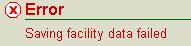

The Facility
Profile page allows you to build upon a new
facility’s
profile, as well as, maintain an existing facility’s current profile. A
Facility
Profile is created either by an external user, or internal
user. The first step for internal users to build a profile occurs via
the second-level menu Create
a Facility of the Facilities
tab. For
additional information on how to begin building a Facility Detail
refer to the Help page for Create
a Facility.
This Help page discusses
how to continue the building process and maintain the profile.
The following topics are included in this help page:
The Facility
Profile page consists of four sections: Facility
Information, Notes, Facility Details and the Facility
Tree.
For more
information regarding the Facility Tree, see the Facility Tree Help
page. The following describes the key fields in each of the other three
sections; however, the fields may differ depending on the facility
characteristics, for example depending on the Current Permitting
Classification. All fields are editable when you are in
edit mode,
unless noted below. Editing a Facility Detail
is discussed under other
headings below.
Facility
ID – ten digit ID assigned to the associated
facility. This
is not an editable field.
Facility
Name – name of associated
facility.
Facility
Description – description of the facility. This
is
entered
when the facility is first created but can be edited later.
Portable
– a check in this box indicates this is a
portable
facility.
This is identified when the facility is first created but can be edited
later.
Portable
Group Type – identifies the type of portable
activity, for
example Asphalt
Plants, if the Portable
box is checked.
Portable
Group Name - if the Portable
box is checked,
identifies the
name designated by Ohio EPA to identify all the portable facilities
that belong to a single company, for example Asphalt Paving Company #1.
This can be useful for companies that do business under several names,
but are owned by a single entity, identifiable by the Portable Group
Name. The DO/LAA should contact the system Administrator
in order to
create a Portable
Group Name. Once created, select from a picklist.
Operating
Status – indicates whether the facility is Not
Yet
Installed, Inactive, Operating, or Permanently Shutdown.
Shutdown
Date – identifies the date of the permanent shutdown if
the operating
status is Permanently
Shutdown. For more information on permanently
shutting down a facility see the heading below “Permanently Shutting
Down a Facility or Emissions Unit”.
Permitting
Classification – identifies the type of
permitting the
facility is subject to; for example non-Title V (NTV) or
Title V (TV).
PBR
is designated for a facility if the only permit type is a
permit-by-rule (PBR).
Meaning, if the facility is subject to a PBR but
is also a Title V facility, TV would
be identified as the
classification. None
is identified after the facility is first created
but before the first permit is issued. None may also be identified for
certain facilities that were migrated into the system as permanently
shutdown. This is not an editable field but is updated
automatically by the system based
on permit issuance. In the event a permit is issued for the facility
for
transitioning to a different facility class, this field is
automatically updated by the system to identify the new classification.
PER
Due Date – identifies the date selected for the
annual
permit
evaluation report (PER). This would only be applicable to any facility
issued a PTIO (or FEPTIO). This is not an editable field.
Transitional
Status – indicates if a facility is changing
permit
classification applicability, for example, Going to TV. In
the event the facility is changing
facility class, this field is edited by during the
transition
process. Once the permit is issued for the
facility to complete the transition to a different permitting
classification,
this field will reset back to None and
the Facility Class is
automatically updated as described above.
Title
V Permit Status – identifies the state of the Title
V
permit
for Title V facilities. Either Pending Initial,
Active, Extended or Expired.
Extended
indicates a timely renewal application was submitted; however,
the expiration date has passed. This is not an editable field.
Title
V Certification Report Due Date - identifies the
date
the
annual report is due. This would only be applicable to any facility
issued a Title V permit. This is not an editable field.
Title
V Type A – for Title V facilities, identifies
facilities that
fall into USEPA’s created category of those facilities that are
required to report EIS (Emissions Information System) on a more
frequent
basis. Note, this is currently not in use as both Type A and non-Type A
Title V facilities are required to report on the same basis.
Emissions
Reporting Category for XXXX (where XXXX is the
year) –
indicates the emissions reporting category for the last year reports
were submitted by the facility. This is not an editable field.
Anticipated
Emissions Reporting Category for XXXX (where
XXXX is the
year) - indicates the emissions reporting category for the next year
reports would be submitted by the facility. This is not an editable
field. Note, in the event the
facility is changing permitting classification, this field is automatically
updated if the transition results in a different emissions reporting category.
This section contains a datagrid of Notes
regarding the
facility that
are either entered by a user or entered automatically by the system
after certain actions occur. The following columns are contained in the
datagrid:
Note
ID – unique clickable ID number generated by the system
and
assigned to the Note.
Clicking the ID
will create a pop-up of the Note
where you can view the full text of the Note. If
you were the generator
of the Note
it will also be editable.
Note
– the beginning text of the Note.
User
Name – user who entered
the Note
or initiated the action causing the system to auto-generate
the Note;
“Air, Legacy” if migrated from an old system.
Date
– date the Note
was entered; migration date if migrated from an
old system.
Core
Place ID – an Ohio EPA identifier used to identify
facilities agency-wide. This
is not an editable field by DO/LAA staff but is entered by a Core Reconciler
upon the creation of a “Greenfield” facility (one that has not done business with
Ohio EPA in the past).
Intra
State Voucher – a
fiscal identifier of other State entities used for invoicing purposes.
This should be edited only by a Central Office invoicer
Federal
SCSC ID Flag – a USEPA identifier for multi-establishment
facilities.
Latitude
and Longitude – six fields where the exact
coordinates of the facility’s latitude and longitude may be identified.
Click the hyperlink entitled Lat/Long
reference information (visible
when not in edit mode) to be taken to the External References
page
where you can find additional information regarding this topic.
SIC
– a datagrid containing the standard industrial classification
(SIC) code(s) applicable to the facility. Click the hyperlink entitled SIC
reference information (visible when
not in edit mode) to be taken
to the External
References page where you can find additional
information regarding this topic.
NAICS-
a datagrid of the North American Industrial Classification
System code(s) applicable to the facility. Click the hyperlink entitled
NAICS
reference information (visible when
not in edit mode) to be taken
to the External
References page where you can find additional
information regarding this topic.
For a printable view of the applicable SIC or NAICS
numbers, click the Printable
View button, a window will open displaying the applicable
data. To export the applicable data to an Excel spreadsheet, click the Export to
Excel button, a window will open and ask if the file
should
be opened, saved, etc.; click Open to
view in Excel.
Entering New Facility Detail Information after Creating a
Facility
Profile
After you have created a facility via the second-level menu
Create a
Facility of the Facilities
tab it is necessary to continue creating the
facility through the Facility
Profile page.
Scroll to the bottom of the page and click Edit.
The page
refreshes,
advancing to the top in edit mode. Here you may edit the information
you entered on the Create
a Facility page, if necessary, and continue
to input information into input fields relating to the facility. The
following describes the key information that should be entered:
Operating
Status - select from the pick list values the
option that
describes the operating status of the facility. For a new facility, the
Operating
Status value will almost always be the default value, Not Yet
Installed. If you are permanently shutting down a facility
see the
heading below “Permanently Shutting Down a Facility or Emissions Unit”
for more information.
Transitional
Status - select from the pick list, one of
the five Going
to options if the facility is changing from one permitting
classification to another. If no change is needed to the permitting
classification, click the dropdown arrow and choose NONE.
Federal
SCSC ID: if known, enter the facility’s Federal SCSC ID
into the input field.
SIC:
one or more SIC
codes may apply to a facility. To select the applicable SIC
number(s),
click the Add
SIC button, then select from the pick list. Choose the
description that best describes the facility’s operations. To add more
than one SIC,
click the Add
SIC button again and choose another
description from the pick list. To delete an SIC
number, check the box
to the left of the SIC
to be deleted and click Delete
Selected SICs.
NAICS:
one or more NAICS
codes may apply to a
facility. To
select the applicable NAICS
number(s), click the Add
NAICS button, then
select from the pick list. Choose the description that best describes
the facility’s operations. To add more than one NAICS,
click the Add
NAICS button again and chose another description from the
pick list. To
delete a NAICS
number, check the box to the left of the NAICS to
be
deleted and click Delete
Selected NAICS.
In addition to the fields above, other fields should be
entered with
the appropriate information. Once you have entered the new facility’s
applicable information into the input fields, click the Save
button to
save the information in the Facility Detail.
The page will refresh
with the facility information as read-only.
If the Facility
Profile information has been saved and
changes to the
information are deemed necessary, scroll to the bottom of the Facility
Profile page and click the Edit
button to return to edit mode and make
necessary changes.
IMPORTANT: If you receive an error message
in your information bar that reads  , any changes you are attempting to save for
a Facility Detail will be
lost.This may occur in very rare
circumstances where more than one person is attempting to make changes to the
same Facility Detail through the
internal side of the system at the same time.If more than one person opens a Facility
Profile and makes changes, the first one to save will accomplish the
task while the other person will receive this error. THIS ONLY OCCURS when more
than one person has the Facility
Profile OPEN and is in edit mode at the SAME TIME.
Create Emissions Unit, Control Equipment and
Release Points Buttons
After saving the Facility Detail
information, you will need
to use the
buttons at the bottom of the Facility Detail
page; Create
Emissions
Unit, Create Control Equipment, and Create Release Points,
to continue
building the facility’s profile. You will want to refer to the Facility
Tree Help page for detailed information on each of these features.
On the Facility
Profile page, to the left, you will see a third-level
menu. The third-level menu contains a list of operations through which
you continue completing a facility’s profile. For information on these
features please see their related Help pages. To construct or maintain
a complete Facility
Profile, at a minimum the following third-level
menu options should be completed: Owner/Contacts,
Permit(s), Federal
Rules, Attachments, and Allowable Emissions.
The Facility
Profile page allows you to maintain/update a facility’s
profile. In order to update an existing Facility Detail,
you can
scroll to the bottom of the page and click the Edit
button to update
fields displayed on the main Facility Detail
page. When first entering
new facility information, you created additional emissions units,
control equipment or release points through the buttons at the bottom of
the Facility
Profile page. You can continue to add additional emissions
units, control equipment or release points to the Facility Detail
through these buttons or if you need to make changes to those which
were already created, you can maintain them through the third-level
menu options: Emissions
Unit, Control Equipment or Release Point.
There
are also many other features available through the third-level menu
options which should all be explored.
Maintaining the Facility Detail
is similar to entering a new Facility Detail,
which is discussed
elsewhere on this Help page. Please refer to the other sections of this
Help page for further details and links on how to perform common
actions.
You will see, at the bottom of the page, a Preserve Current
Profile
button. This button may be used, before editing any
part of the
profile, to save a record of the current Facility Detail
information.
Once you click the button, a pop-up box will appear with a statement of
why/how to use this option; click Yes if
you would like to save the
current profile.
You will see, at the bottom of the page, a Show Profile Report
button.
This button may be used to print the entire current Facility Detail.
If you click the button, a pop-up appears listing Facility Detail
Documents. To open the document you must select a Facility Detail Data
Report link in which another pop-up window appears with
the entire
Facility
Profile document, which can then be printed.
Permanently Shutting Down a Facility or Emissions Unit
In order to permanently shutdown a facility or an emissions
unit(s),
Ohio EPA must receive a request and signed certification from the
authorized official, as defined in OAC rule 3745-31-04(B) for non-Title
V facilities, or the responsible official, as defined in OAC rule
3745-77-01 for Title V facilities, that identifies the facility ID or
emission unit ID(s) and the date on which the facility or emissions
unit(s) was permanently shutdown. If you select Permanently Shutdown
from the Operating
Status picklist, you will be required to enter a
Shutdown Date.
The Shutdown
Date should be entered according to the
actual shutdown date identified in the letter from the authorized
official/responsible official, which may not necessarily correspond to
the date of the letter itself.
The steps for permanently shutting down an emissions unit(s)
are discussed in the Help page for Facility
Tree.